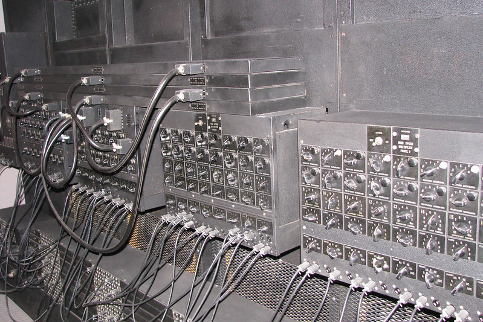
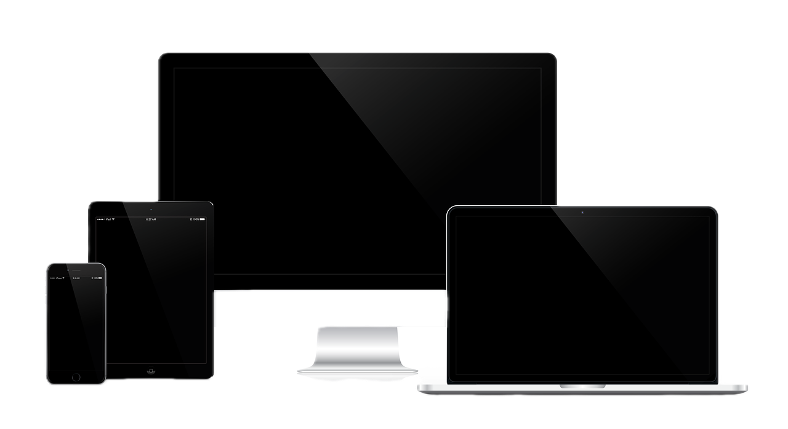

Il computer: una finestra sul mondo digitale
Il computer è uno degli strumenti più rivoluzionari del nostro tempo. Inventato per semplificare calcoli complessi e automatizzare processi, si è evoluto fino a diventare una parte fondamentale della vita quotidiana, in casa, al lavoro e nel tempo libero.
Dal primo modello, l’ENIAC, agli attuali laptop e supercomputer, la tecnologia informatica ha compiuto passi da gigante. Un computer moderno è composto da hardware, come la CPU (il "cervello" della macchina), la RAM (la memoria a breve termine), e l’hard disk o SSD (la memoria a lungo termine), e da software che ne gestisce il funzionamento, come i sistemi operativi e le applicazioni.
L’uso del computer spazia dalla scrittura di documenti al controllo di complessi sistemi industriali, dall’intrattenimento alla ricerca scientifica. Internet, accessibile tramite computer, ha reso possibile la comunicazione globale, l’apprendimento a distanza e il commercio elettronico.
Tuttavia, l’uso del computer non è esente da sfide: la dipendenza dalla tecnologia, la protezione dei dati personali e l’impatto ambientale della produzione e dello smaltimento dei dispositivi sono temi di grande rilevanza.
Nonostante ciò, il computer rimane uno strumento insostituibile, simbolo del progresso e della capacità umana di innovare e trasformare la realtà.